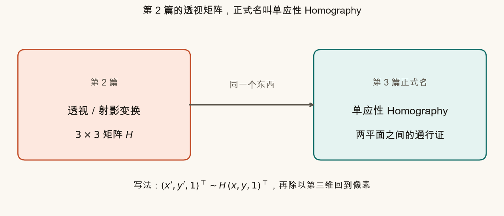
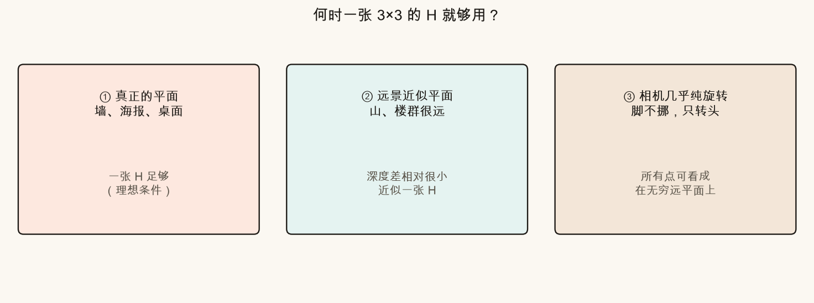
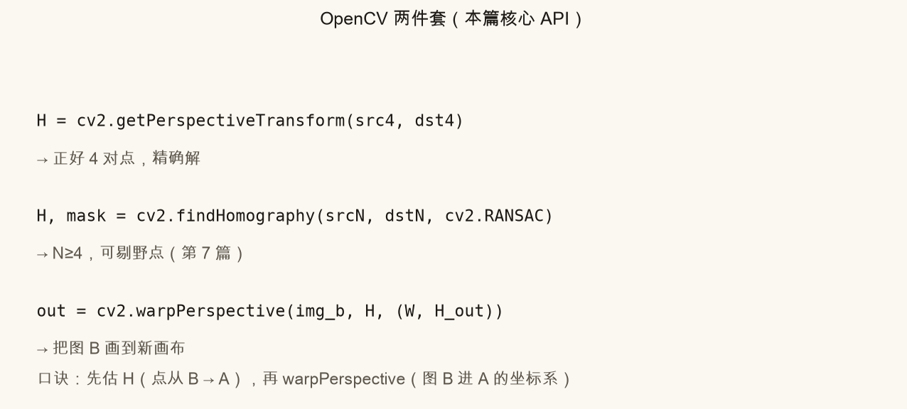
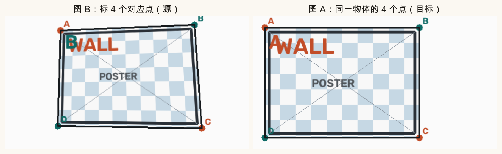
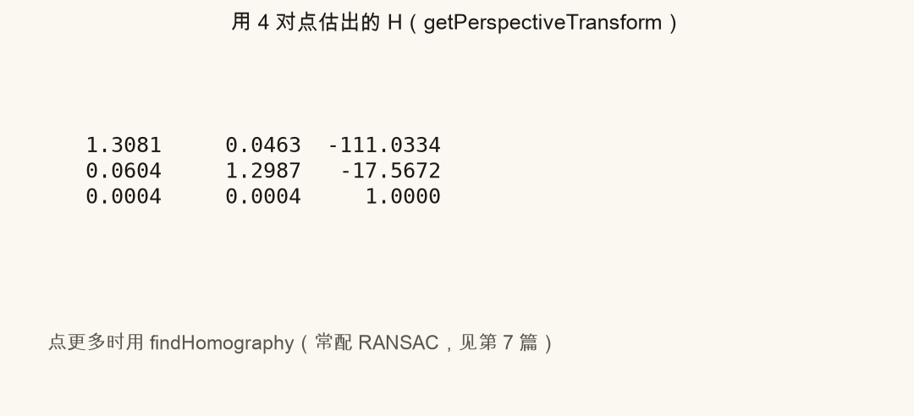
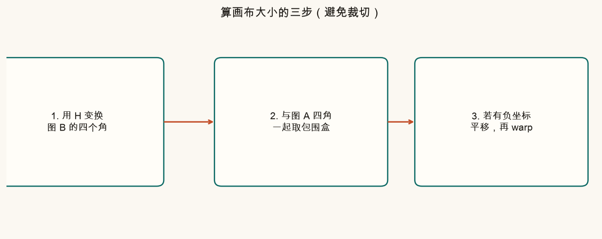
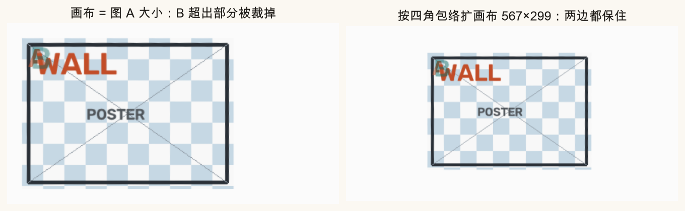
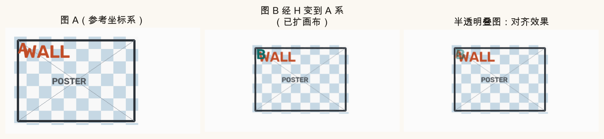
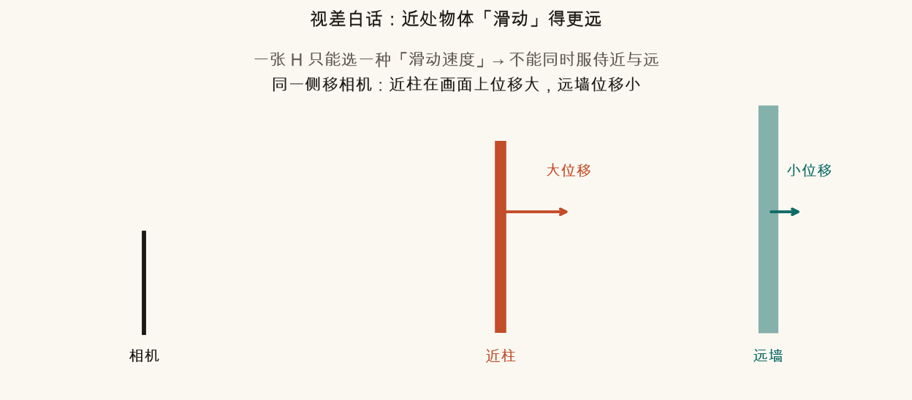
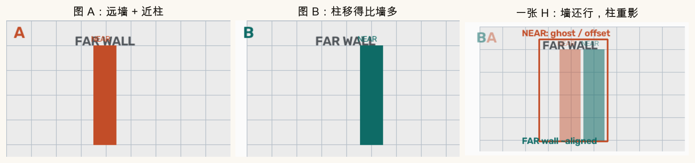

第 3 篇 · 配准核心 · 约 50 分钟
第 2 篇末尾那个 3×3 透视矩阵，今天正式起名：单应性 Homography，记作 H。一张合格的 H，能把图 B 里的平面「翻译」到图 A 的坐标系。你会亲手估 H、扩画布、叠图，也会亲眼看到近景大视差时它怎样翻车。
先回想一个生活场景：你手里有两张同一面墙的照片。墙是平的。你在第一张照片上指一个螺丝钉，第二张照片上同一个螺丝钉在另一个像素位置。若整面墙都服从同一种「对应规则」，这条规则就可以写成一个 3×3 矩阵——这就是单应性。
第 2 篇已经写过：点先抬成齐次坐标 (x, y, 1)，乘上 H，再把第三维除掉，得到新像素坐标。那时我们叫它「透视 / 射影变换」。在拼接、标定、文档矫正的文献和 OpenCV 文档里，它几乎总被叫做：
Homography 单应性 矩阵记作 H

白话口诀：
公式写法：(x′, y′, 1)T ∼ H · (x, y, 1)T。波浪号 ∼ 表示「差一个整体比例」。算完若第三维是 w，就用 X = xh/w、Y = yh/w 回到像素。
一张 H 能描述「整幅图」的对应，前提是：你关心的那些三维点，看起来像躺在同一个平面上（或数学上等价于这种情况）。常见三类：

反过来，若你一边平移一边拍近处立体物体（桌边的杯子、走廊里的行人），不同深度的点在画面上「滑动」的速度不一样——一张 H 只能选一种滑动方式，必然顾此失彼。那是本篇后半的失败案例。
H 有 8 个自由度，一对对应点提供两个方程（x′ 与 y′），所以至少 4 对不共线、不退化的对应点。OpenCV 给你两条路：

# 正好 4 对点：解析求解（点必须准）
H = cv2.getPerspectiveTransform(src_pts, dst_pts) # 都是 4×2 float32
# 多于 4 对：可配合 RANSAC 剔错配（第 7 篇展开）
H, mask = cv2.findHomography(src_pts, dst_pts, cv2.RANSAC, ransacReprojThreshold=3.0)约定很重要：src 是图 B 上的点，dst 是图 A 上的对应点。估出来的 H 满足「B 的点 → A 的点」。后面 warpPerspective(img_b, H, …) 才能把 B 画进 A 的坐标系。


getPerspectiveTransform 得到的 H。第三行若明显不是 [0,0,1]，说明含透视成分。点的顺序必须一一对应：都按「左上→右上→右下→左下」，或你自己约定的同一绕行方向。顺序乱了，H 会「拧巴」，warp 出飞掉的结果。
估好 H 之后，核心一句：
out = cv2.warpPerspective(img_b, H, (width, height))它的意思是：遍历输出画布上每个像素，用 H 的逆 回到图 B 取样（反向映射，避免窟窿）。你只需记住效果：图 B 被「印」到以图 A 为参考的坐标系里。
坑在第三参数 (width, height)。若直接用图 A 的宽高，图 B 里伸出 A 边界的部分会被裁掉——拼接时常见「右边缺一块」。正确做法：
H_adj = T @ H 去 warp，画布尺寸取包围盒大小。
canvas_from_corners 就是这件事。
对齐好不好，最直观的办法是半透明叠在一起：墙缝、棋盘格、文字如果「重影」很小，说明 H 找对了；若明显双影，要么点标错了，要么场景根本不该用一张 H。

伪代码（与课文脚本一致）：
H = cv2.getPerspectiveTransform(pts_b, pts_a)
blend, warped_b, ... = overlay_images(img_a, img_b, H, alpha=0.45)
# 内部：算画布 → H_adj = T @ H → warp 两图 → 按 mask 混合想象你朝左侧平移一步再拍照。近处的电线杆在画面上会滑过很大一截；远处的山几乎不动。这种「近大远小的位移差」叫视差（parallax）。
一张 H 只能规定一种全局滑动方式。你若用远墙的点估 H，墙会对齐，近柱必然错位、出现重影；你若硬用近柱的点，墙又会裂开。这不是调参能救的——是模型假设破了。


以后遇到重影，先问：是曝光不一致，还是几何模型不够？本篇这种「近柱远墙」是几何失败。曝光问题在更后面的篇章处理。大视差场景往往需要更复杂的方法（多平面、网格变形、深度等），不是再估一张全局 H 就能搞定。
左侧是图 B 的源四边形（可拖橙青四角），右侧实时用 H 把棋盘「印」到目标位置。你也可以拖右侧目标四角，或动滑块改透明度，观察叠在底图 A 上的效果。
source .venv/bin/activate # 若尚未激活
python code/ch03_homography.py会写出 ch03_naming.png、ch03_when_ok.png、ch03_warp_overlay.png、ch03_parallax_fail.png 等，以及你的 ch03_my_overlay.png。原图在 assets/images/ch03_*.png。
打开 code/ch03_homography.py，改顶部三个旋钮：
MY_DST_QUAD：把图 B 整幅映到更靠右 / 更倾斜的位置，看 ch03_my_overlay.png 里棋盘如何落在 A 上。MY_ALPHA 在 0.2～0.7 之间切换，体会叠图时「看清对齐」与「看清底图」的折中。MY_DST_QUAD 四个点几乎共线或扭成自交——运行后叠图会很难看。对照交互区的「故意拧巴」按钮，建立「对应点质量决定 H」的直觉。getPerspectiveTransform 换成 findHomography，多加一对噪声点，观察 H 是否仍稳定（更多讨论见第 7 篇）。本质上是同一个 3×3、8 自由度的射影变换；本篇只是正式命名，并强调它在「两平面对应」里的用法。
例如：拍摄真实平面（墙/海报）；远景近似平面；相机近似纯旋转（脚不动只转头）。
getPerspectiveTransform 和 findHomography 怎么选？正好 4 对、点很准 → 前者。点更多或可能有误匹配 → 后者（常配 RANSAC）。
图 B 经 H 变换后可能伸出图 A 边界；锁死 A 的尺寸会裁掉内容。应按两图四角的包围盒扩画布，必要时加平移 T。
常见是墙大致对齐、近柱重影（或反过来）。因为视差使不同深度的点位移不同，一张 H 只能拟合一种全局对应。
有了 H，还缺「相机自己的内参」：焦距、主点、畸变。下一篇进入针孔相机与标定直觉，为后面把像素对应连回三维做准备。